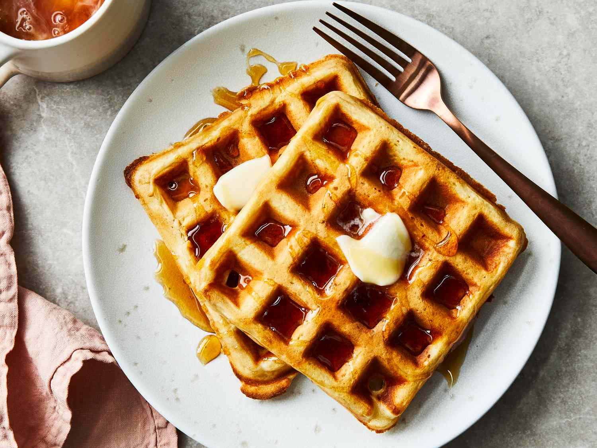

Back Home
Waffles

Description
These waffles turn out lovely and crispy. Perfect for any day of the week!
Ingredients
- 2 cups all-purpose flour
- 1 teaspoon salt
- 4 teaspoons baking powder
- 2 tablespoon white sugar
- 2 eggs
- 1 1/2 cups warm milk
- 1/3 cup butter, melted
- 1 teaspoon vanilla extract
How to Make Waffles Step by Step
- In a large bowl, mix together flour, salt, baking powder and sugar; set aside. Preheat waffle iron to desired temperature.
- In a separate bowl, beat the eggs. Stir in the milk, butter and vanilla.
- Pour the milk mixture into the flour mixture; beat until blended.
- Ladle the batter into a preheated waffle iron.
- Cook the waffles until golden and crisp.